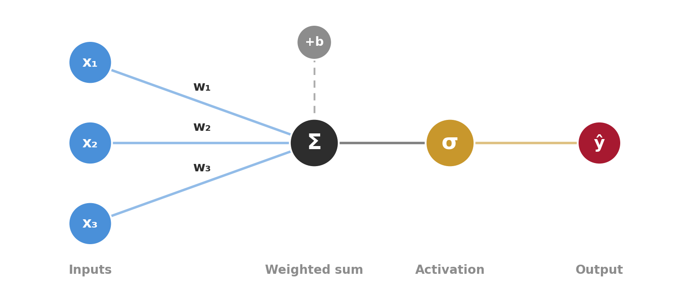
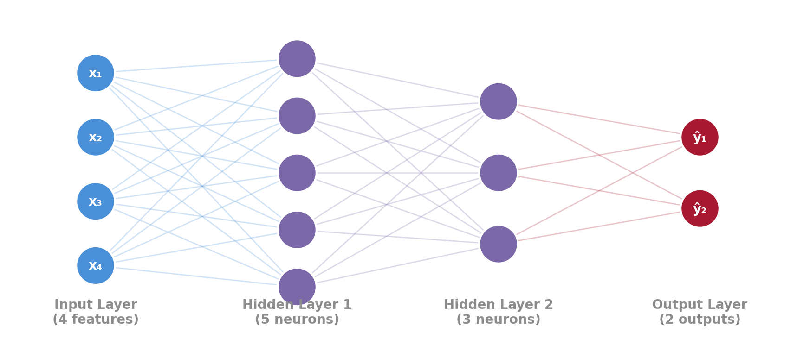
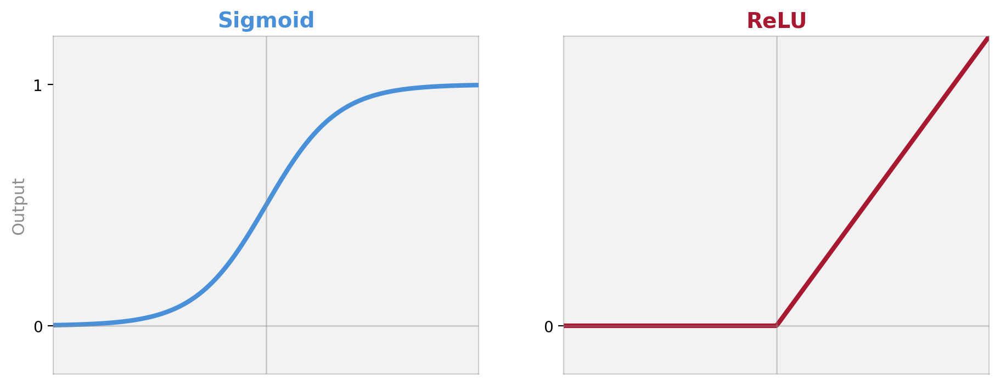
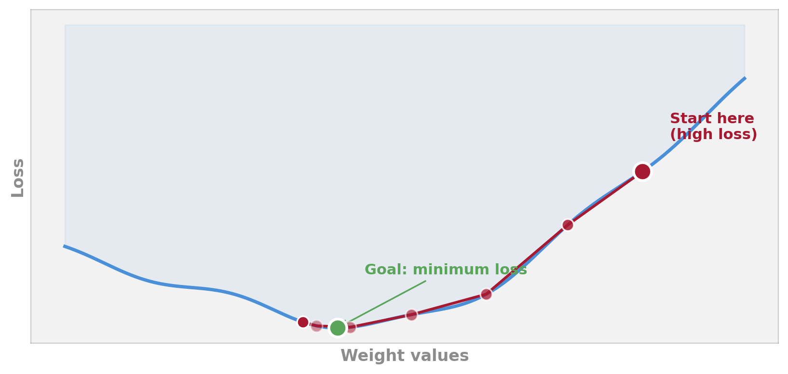
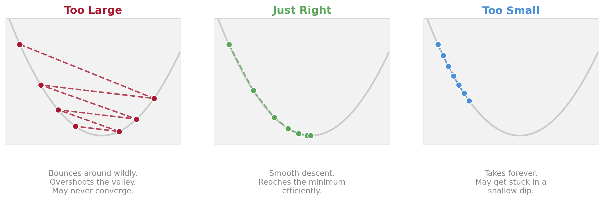
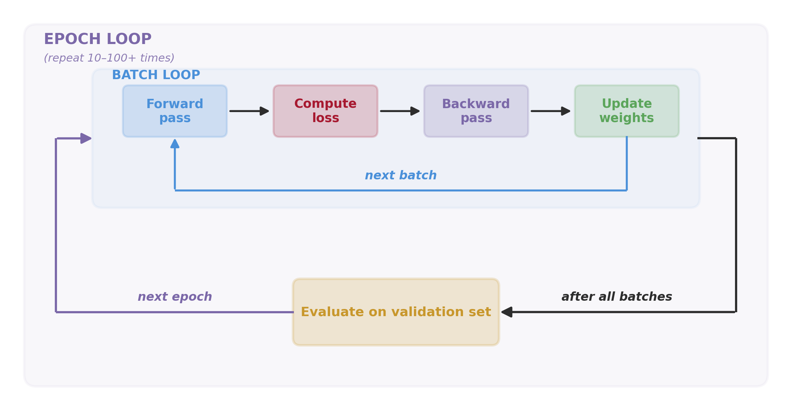
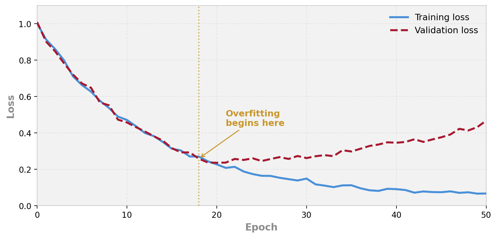
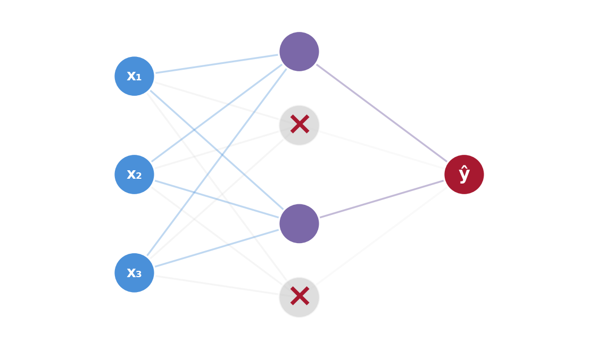

Week 9
Starting with something you already know
Remember logistic regression from Week 5?

A single perceptron is logistic regression. Multiply inputs by weights, add a bias, apply sigmoid. That’s it. A neural network is just many of these stacked together.
Multiply each feature by a weight
Add them up (plus a bias term)
Apply the sigmoid function
Get a probability between 0 and 1
Multiply each input by a weight
Add them up (plus a bias term)
Apply an activation function
Get an output
These are the same computation described in different vocabularies. The perceptron was invented by psychologist Frank Rosenblatt in 1958 — inspired by how neurons in the brain combine signals.
Stack multiple layers of perceptrons together:

Universal approximation theorem: A neural network with just one hidden layer (and enough neurons) can approximate any mathematical function. In theory, it can learn anything.
“Can learn anything” sounds great — but it also means neural networks can learn noise just as eagerly as signal. This is why overfitting is the central challenge.
These models were inspired by neurons in the brain — but they don’t actually work like brains. Real neurons are vastly more complex.
Is calling these “neural networks” helpful? Does the brain analogy make them easier to understand — or does it create dangerous misconceptions about what AI can do?
Where non-linearity enters the picture

Sigmoid — squashes everything to 0–1. You used this in logistic regression.
ReLU — if negative, output 0. If positive, pass through. The workhorse of modern deep learning.
Without activation functions: Stacking 100 layers of linear math still gives you… a linear model. No matter how many layers, it collapses to one big multiply-and-add. You’d just get fancy regression.
With activation functions: Each layer can bend the space. The network can learn curved boundaries, complex interactions, and patterns that no straight line could capture.
Analogy: Activation functions are like joints in a robotic arm. Without them, the arm is a rigid stick (linear). With them, it can reach anywhere (non-linear). More joints = more flexibility.
Forward, measure, backward, update
This cycle repeats thousands of times. Each repetition makes the predictions slightly better.

Analogy: You’re standing on a misty hillside and can’t see the valley below. You can only feel the slope under your feet. Gradient descent = always step downhill. Eventually you reach the bottom — or at least a dip.

The learning rate is one of the most important settings in neural network training. Getting it right is more art than science.
You build a neural network to predict depression severity from lifestyle factors. It achieves 78% accuracy. Your logistic regression from Week 5 achieved 74% accuracy on the same data.
Is the 4% improvement worth the extra complexity? What else would you want to know before choosing one model over the other?
Epochs, batches, and validation
One full pass through the entire training dataset.
Training typically runs for 10–100+ epochs. Like re-reading a textbook multiple times.
A small chunk of data processed at once (e.g., 32 participants).
Instead of learning from all 3,000 rows at once, update weights after every 32. Faster and often better.
How much to adjust weights at each step.
Too large = unstable. Too small = slow. Typical starting point: 0.001.

Two nested loops: the inner batch loop updates weights; the outer epoch loop repeats it many times, checking validation between epochs.
This is what PyTorch does under the hood. In Week 10, you’ll write code that looks very similar to this.
Plot the loss after each epoch — separately for training and validation data:

When training loss keeps dropping but validation loss starts rising, the model is memorising the training data instead of learning general patterns. This is the moment to stop.
When too much power becomes a problem
Week 3 callback: Ridge and Lasso used regularisation to keep linear models honest. Neural networks need their own version of regularisation.
During each training step, randomly “turn off” some neurons (typically 20–50%).

Grey crossed-out neurons are “dropped” this step
Stop training when validation loss starts rising.
The simplest and often most effective defence. “Quit while you’re ahead.”
Randomly deactivate neurons during training.
Forces distributed learning. Typical rate: 20–50% of hidden neurons dropped per step.
Penalise large weights (like Ridge regression from Week 3!).
Keeps the model simpler. Same idea as regularisation, applied to neural networks.
In practice, you’ll often use all three together. The tools are different from Week 3, but the principle is identical: constrain the model to generalise.
A decision framework
Large datasets (thousands+ of observations)
High-dimensional inputs (images, EEG, fMRI, audio, text)
Complex non-linear patterns
You care about prediction accuracy more than interpretability
Small datasets (< 500 participants)
Tabular data (rows and columns, like a spreadsheet)
You need to explain the model (which features drive predictions)
A simpler model performs almost as well
For typical psychology datasets — a few hundred participants, 10–50 survey items, tabular data — a well-tuned Random Forest or Ridge Regression will often match or beat a neural network.
Rule of thumb: Try the simplest model first. If it works well enough, stop there. Use neural networks when you have the data, the complexity, and the reason to justify them.
A colleague says: “We have 200 participants who completed a 30-item questionnaire. I want to use a deep neural network to predict their therapy outcomes.”
What would you advise? What kind of model would you suggest instead, and why?
Decode motor intentions from EEG signals. Enable paralysed patients to control devices with thought alone. Week 10 preview!
Classify mental states from brain scans. Detect patterns of neural activity associated with specific cognitive tasks or clinical conditions.
Simulate cognitive processes: language acquisition, reading, memory retrieval. NNs as theories of how the mind works — not just prediction tools.
Predict mental health episodes from smartphone sensor data: movement patterns, typing speed, social media use, sleep–wake cycles.
A brain-computer interface uses a neural network to decode movement intentions from EEG. It’s 92% accurate.
Should it be used to control a prosthetic limb? What level of accuracy would you need before you’d trust it for medical use? What about for typing on a screen?
Does the acceptable error rate depend on the consequences of a mistake?
Every model you’ve built so far worked with features you chose — sleep hours, DASS items, big-five traits.
Neural networks are different. Each hidden layer learns its own representation of the data — a new way of describing each person, image, or signal. The network discovers what to pay attention to.
Capture simple patterns — e.g. “high on items 3, 7, 12”.
Combine those into higher-level concepts — e.g. “anxious + sleep-deprived + isolated”.
This is the same idea behind word embeddings and large language models — we’ll come back to it in Week 11.
ai-behscipython -c "import torch; print(torch.__version__)"A complete neural network in 7 lines.
Neural network errors are often silent — the code runs, but the model doesn’t learn. This requires a different debugging approach.
Weak prompt
“My neural network isn’t working. Here’s my code.”
Strong prompt
“My PyTorch model trains for 50 epochs but validation loss stays at 0.69 (chance level for binary classification). Training loss drops to 0.02. Architecture: 11 → 64 → ReLU → 1. Learning rate 0.001. Batch size 32. Here’s my training loop and loss plot. What could cause the val loss to plateau?”
The key difference: share the behaviour (loss values, plots, what you expected vs. what happened), not just the code. Silent bugs need diagnostic context.
| Week | Skill | Core idea |
|---|---|---|
| 2 | Prompting | Give the AI enough context to write good code |
| 4 | Debugging | Share the full error context, not just the message |
| 6 | Refactoring | Make working code cleaner and more readable |
| 8 | Documentation | Write clear methods descriptions for your analysis |
| 10 | Complex Debugging | Diagnose silent failures using behaviour, not just errors |
Each skill builds on the last. By Week 10, you can prompt, debug, refactor, document, and diagnose silent model failures.
Practical AI for Behavioural Science · Week 9
Week 10: Building your first neural network in PyTorch
See you next week